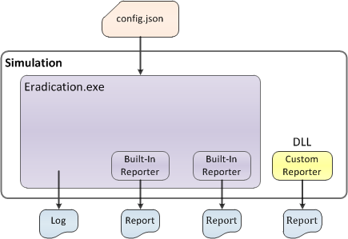

Custom reporters¶
Reporters extract simulation data, aggregate it, and output it to a file known as an output report. You can process the report data using tools, such as Python or MATLAB, to create graphs and charts for analysis. EMOD provides built-in reporters that are part of the EMOD executable (Eradication.exe) and can be enabled or disabled by setting parameters in the configuration file. See Output report structure for a list of the reports that are available using built-in reporters.
In addition, you can use custom reporters that extract data from the simulation and aren’t part of the Eradication.exe. A custom reporter is an EMODule that you plug in to EMOD. Custom reporters are not supported for CentOS on Azure. There are several reporters in the GitHub reporters directory that you can use. You may also want to build your own custom reporter to create a new output report.
The Eradication.exe must load the reporter when running a simulation to use it. If it is loaded, the output report will be automatically generated at the end of the simulation. There are three ways to specify their location so Eradication.exe can load them. Eradication.exe attempts to load the file using the following methods, in the order listed:
- Define the location of the dynamic link library (DLL) in a JSON-formatted file (emodules_map.json).
- Point to the location using the
--dll-pathcommand-line option when invoking Eradication.exe. - Place the DLL in the working directory.
JSON file¶
First, Eradication.exe looks for an emodules_map.json file in the working directory. This map file lists specific reporter DLLs and their exact location. This is useful if you want to store all custom reporters in the same directory, but only want certain reporters to be used with each simulation.
The emodules_map.json file has three sections: diseases, interventions and reporters. Each section is a JSON array and contains the path to each EMODule in the array. Although reporter EMODules are the only type currently supported, empty disease and intervention sections must be included. You must use either a double backslash (\) or a single forward slash (/) to represent a single backslash for the path. For example:
{
"disease_plugins": [
],
"interventions": [
],
"reporter_plugins": [
"C:\\src\\EMOD\\x64\\Release\\emodules\\reporter_plugins\\libreportpluginbasic.dll"
]
}
Command-line option¶
If a map file is not provided, you can include the --dll-path option when you invoke Eradication.exe. It
must point to a directory with a reporter_plugins subdirectory that contains the reporters. The name
of the directory does not matter, but the reporter must be in a subdirectory named reporter_plugins.
Note that this method will load all reporters in the root directory specified.
If you build custom reporters as described here, the DLLs will be saved to the following directories, depending on the build configuration:
- <EMOD source directory path>x64Releasereporter_plugins
- <EMOD source directory path>x64Debugreporter_plugins
Therefore, if you do not move your reports, you will set --dll-path to one of the following paths:
- <EMOD source directory path>x64Release
- <EMOD source directory path>x64Debug
For more information on EMOD command-line options, see Run a simulation using the command line.
Working directory¶
Finally, if neither the the map file or the command-line option are provided, Eradication.exe looks for the reporter plug-in in the current working directory.